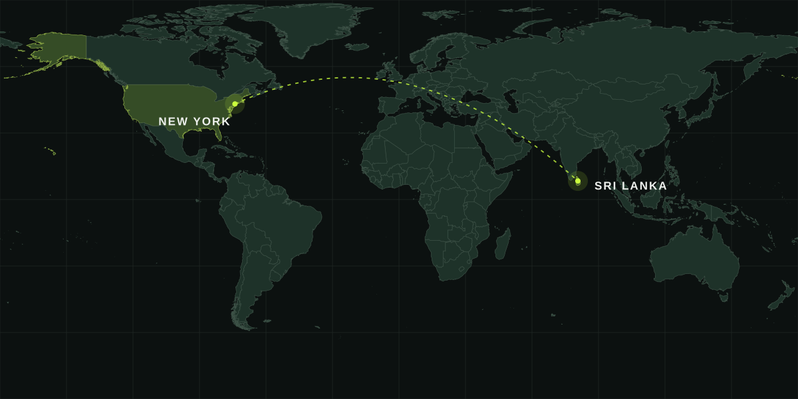

Built for its purpose.
Start with the function. Develop the material, geometry and fit. Review the physical sample before commercial production.
Our processAbout us / Tin Tech Packaging
We help businesses turn a product idea into a repeatable manufacturing program—with commercial coordination in New York and development and production in Sri Lanka.
We develop plastic packaging, retail components and made-to-spec products. Product function, materials, tooling, quality, assembly and export packing are considered together.
Our approach is built around long-term product programs, with repeat quality and clear approvals shaping each production run.
Discuss your productStart with the function. Develop the material, geometry and fit. Review the physical sample before commercial production.
Our processConnect tooling, quality, packing and delivery in one program, then plan the next run around real demand.
Production pathwaysTwo locations / One connected program

Commercial coordination and warehouse support.
View region on mapProduct development and manufacturing.
View region on mapRegional operating locations. Visits and delivery arrangements are coordinated with the team. Map data: Natural Earth.
A sample, a drawing or a product that needs to work better.